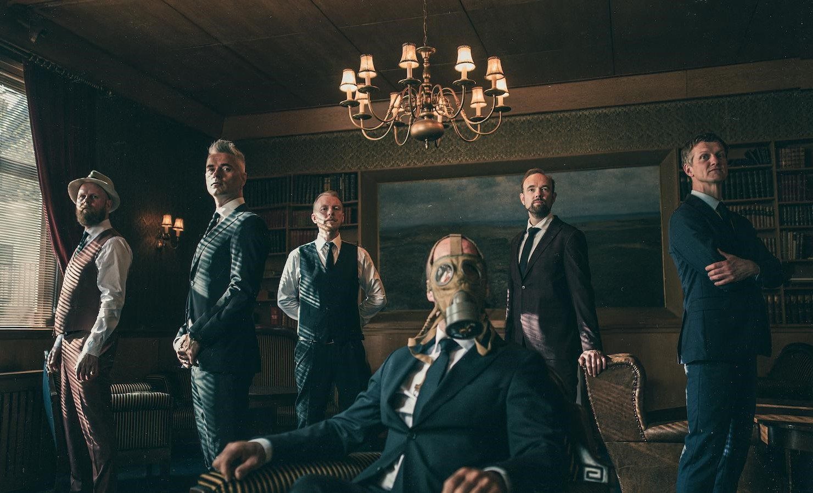

Om
Historie
Kaizers Orchestra er et band fra Rogaland som startet i Bergen. Janove, Geir, Rune og Helge som før hadde spilt i bandene Blod, Snott & Juling og Gnom startet banden som et prosjekt med et ønske for å lage et råere band. Kaizers er inspirert av den ene sangen fra Gnom: Bastard. Der får vi høre fra en "viss Mr. Kaizer" som er en stolt eier av verdens tyngste siameser. Sangen hadde også en oljetønnesolo som også har blitt et kjennetegn på Kaizers Orchestra. I 2001 kom bandets debutalbum Ompa til du dør. Albumet fikk kjempegod respons og fikk terningast 5 og 6 av avisene. Etter et par år med konserter kom bandets andre album Evig Pint. Du kan leve ser om bandets utgivelser her. I 2013 ble bandet oppløst, men i 2022 kom de tilbake. Så langt har de hatt en comeback-turné i Stavanger, Oslo, Bergen og Trondheim. De har også hatt en europaturné og en lang rekke med sommerfestivaler. I august 2024 skal de turné i USA, for første gang noen sinne.
Bandmedlemmer
Kaizer-linker
Offisiell nettside
Merchandise
DGDEN
Streaming
Spotify
Tidal
Apple music
Youtube music